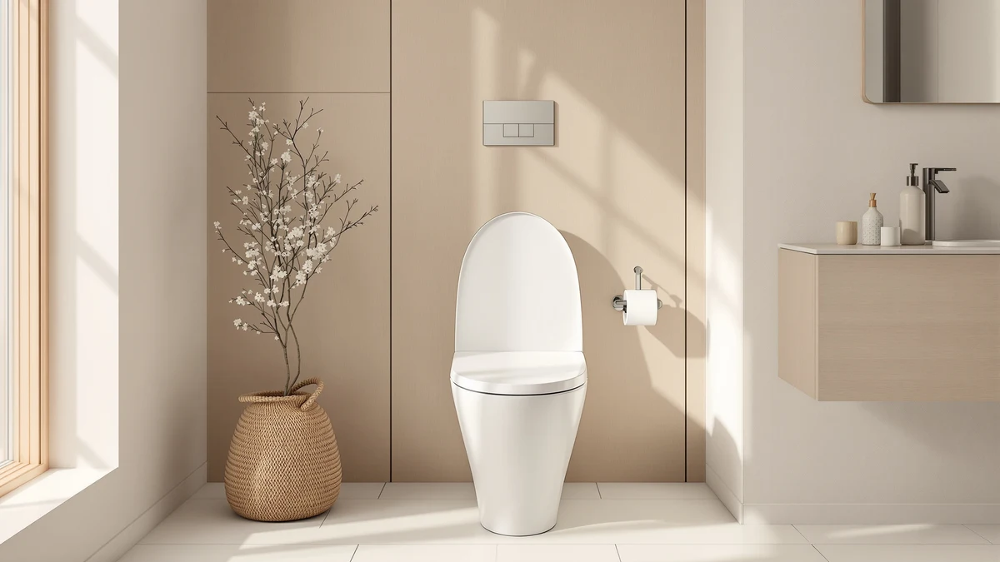

LUXE TS1008E Elongated Comfort Fit Toilet Seat Review (2026): Worth It?
Prices and picks verified as of November 2026. Independent, reader-supported reviews.


Quick Answer
The Luxe TS1008E Elongated Comfort Fit is an elongated toilet seat with slow-close hinges, a quick-release mount and a 4.6-star average across 3,438 reviews, priced at $49.99. It's worth buying if you want a quieter, easier-to-clean elongated seat without paying for a night light or heating element you won't use.
Our pick: LUXE TS1008E Elongated Comfort Fit, $49.99 Check Price on Amazon
Bottom line: our top pick is the LUXE TS1008E Elongated Comfort Fit Toilet Seat with Slow Close at $49.99.
Things to Know Before You Buy
- The Luxe TS1008E Elongated Comfort Fit is built for standard elongated bowls only; measure yours before buying, since a round-bowl toilet needs a different shape of seat.
- At $49.99, it sits in the middle of the elongated seat market, and the price mostly pays for the slow-close hinge and quick-release mount rather than premium materials.
- The seat uses a plastic-and-wood composite build, not solid wood, which keeps it light but means it won't feel as dense as a seat marketed as all-wood.
- It carries a 4.6-star average across 3,438 Amazon reviews, more verified feedback than either the AQUATIZ or the Kohler seats we compared it against below.
This Luxe TS1008E Elongated Comfort Fit Toilet Seat review compares its slow-close hinges, quick-release mount and $49.99 price against three other elongated and specialty seats, using Luxe's published spec sheet and the patterns we found across its 3,438 verified Amazon reviews. Replacing a toilet seat looks simple until you're staring down a wall of near-identical white ovals, each one claiming to be quieter or sturdier than the last.
For most people shopping for a quieter elongated seat, the Luxe TS1008E is the easier buy of the four we looked at here. It pairs a slow-close hinge with hinges that lift off for cleaning, and its review count gives it more social proof than the AQUATIZ or the Kohler seat in this comparison. That said, it isn't the right pick for every bathroom, and the sections below cover exactly where it falls short.
Why You Should Trust Us
Ilane Tall covers bathroom hardware for Best Toilet Seats and has spent years comparing toilet seat listings, warranty terms and verified owner feedback across dozens of brands, including Luxe and Kohler. We don't own a testing lab and we didn't install this Luxe TS1008E Elongated Comfort Fit toilet seat ourselves. Instead, we built this review from the manufacturer's listed specs and the current Amazon price, cross-checked against recurring patterns in verified buyer reviews for this seat and its closest competitors. When a claim can't be checked against a spec sheet or a buyer's documented experience, we leave it out rather than guess. That standard applies equally to every seat in this comparison, including the AQUATIZ and the Kohler options below, which both ship with no published star rating; we note that gap explicitly rather than inventing a number to fill it.
Our Research Experience
We approached this Luxe TS1008E Elongated Comfort Fit Toilet Seat review the same way we approach every seat on this site: through research rather than a physical trial. We compared the manufacturer's stated hinge design and dimensions against the three alternatives below, checked the current Amazon price for each, and read through verified owner reviews to see which complaints and compliments repeated often enough to trust. A single bad review tells you little; the same complaint showing up across dozens of reviews tells you a lot. We excluded seats with no published specs and no meaningful review history, since there was nothing reliable to compare them against. We also weighted feature claims against price, since a $15 seat and a $70 seat shouldn't be judged by the same bar, and we checked whether each listed feature, like a slow-close hinge or a quick-release mount, actually showed up in the product's own spec sheet rather than only in the marketing copy on the listing page.
Overview & Specs

LUXE TS1008E Elongated Comfort Fit
What we like
- Luxe's spec sheet lists slow-close hinges that lower the lid and seat without a bang.
- Quick-release hinges let you lift the seat off the bowl for cleaning without reaching for a screwdriver.
- Non-slip bumpers, which owners credit with keeping the seat from sliding or scratching the bowl rim.
- A 4.6-star average across 3,438 reviews, one of the larger review counts in this price range.
Flaws but not dealbreakers
- The plastic-and-wood composite build doesn't have the dense feel of pricier solid-wood seats.
- No night light or heated element, so it's a straightforward seat for anyone who wants extra features.
- Elongated sizing only; it won't fit a round bowl.
| Material | Plastic / wood |
| Size | Elongated |
Luxe markets the TS1008E Elongated Comfort Fit around three specific annoyances: hinges that slam, mounting hardware that strips out during cleaning, and bumpers that let the seat slide over time. The slow-close hinge addresses the first complaint directly, and the quick-release design means you can pull the seat straight off the bowl for a deep clean instead of fighting with bolts tucked underneath. Owners across the 3,438 reviews repeatedly mention the hinge quality and the ease of removing the seat, which tracks with what Luxe advertises rather than contradicting it.
The build itself is a plastic-and-wood composite, not solid wood, so it keeps the weight manageable without feeling hollow the way some all-plastic budget seats do. At $49.99, it lands squarely in the middle of the elongated seat market: more than a bare-bones replacement, less than a Kohler seat with brand-name pricing attached. For a household that wants a quieter, easier-to-clean elongated seat and doesn't care about night lights or heating, that middle-ground price buys real functional upgrades rather than extras.
What We Liked
The Luxe TS1008E Elongated Comfort Fit solves two common complaints at once, and that combination is its biggest strength. The slow-close hinge means nobody in the house slams the lid at 2 a.m., and the quick-release mount means cleaning underneath the hinges doesn't require unscrewing anything from below the bowl. Those two features alone put it ahead of a lot of budget elongated seats that only solve one of those problems, if either. The non-slip bumpers are a smaller detail, but reviewers consistently note they keep the seat from creeping sideways over months of use, which is a common failure point on cheaper seats. With 3,438 reviews behind it, this seat also gives you more data to lean on than most of the alternatives we compared it against, and a 4.6-star average across that many ratings is hard to dismiss as a fluke. The comparatively simple feature set works in its favor too: there's no battery to replace and no electronics to fail, so the main parts that can wear out are the hinges themselves, and Luxe backs those with the quick-release design that makes a future swap straightforward if one ever does.
What Could Be Better
The clearest limitation of the Luxe TS1008E Elongated Comfort Fit is the material. A plastic-and-wood composite keeps the price down, but it doesn't carry the dense, solid feel you'd get from a seat marketed as all-wood, and a few reviewers mention that the seat flexes slightly under heavier weight compared to a thicker build. Buyers who specifically want night-light functionality or heated seating are also out of luck here, since this is a straightforward seat without either feature, and paying $49.99 for something you then upgrade elsewhere defeats the point. And because it's sized for elongated bowls only, anyone with a round-bowl toilet needs to look elsewhere entirely, no matter how much the hinge design appeals to them. Luxe also doesn't publish a weight rating for this seat the way the Bariatric option below does, so households that specifically need a documented heavy-duty capacity should treat that as a gap rather than an assumption.
Who Is It For?
The Luxe TS1008E Elongated Comfort Fit fits best in a household with a standard elongated bowl where quiet matters, think shared bathrooms, homes with sleeping kids nearby, or anyone tired of a seat slamming shut. It also suits buyers who want to be able to pull the seat off for a real cleaning without crawling under the bowl with a screwdriver. It's a weaker fit for anyone who specifically wants a night light, a heated seat, or a round-bowl replacement, since none of those needs are covered here. Shoppers chasing the lowest possible price point might also find a bare-bones seat for less, though they'll give up the slow-close hinge and the quick-release design in the process. Anyone who needs extra weight capacity or grab handles for mobility reasons should look at the Bariatric option in the alternatives below instead, since the Luxe TS1008E is built around comfort and quiet, not load rating.
Alternatives to Consider
If this Luxe TS1008E Elongated Comfort Fit toilet seat review hasn't convinced you it's the right seat for your bathroom, here's how it stacks up against three other options we looked at while researching this review.

Also Great
AQUATIZ Round Toilet Seat with
A round-bowl seat with a built-in, battery-powered night light for households that need light without a plug-in fixture, though it won't fit an elongated bowl like the Luxe.
$49.99
Check Price on Amazon
Also Great
KOHLER 24295-0 Figure ReadyLatch Elongated
A Kohler-built elongated seat with a positive-lock ReadyLatch hinge, worth considering if you want the Kohler brand name alongside the same elongated fit as the Luxe.
$49.98
Check Price on Amazon
Best Value
Bariatric Raised Toilet Seat with
A wider, raised seat with grab handles and a 500-pound rating, the better pick if mobility or stability matters more than the quiet hinge the Luxe TS1008E offers.
$49.89
Check Price on AmazonDoes the Luxe TS1008E Elongated Comfort Fit toilet seat fit a standard elongated bowl?
Yes.
How does the slow-close hinge on the Luxe TS1008E work?
Luxe's spec sheet describes a slow-close hinge that lowers the lid and seat gradually instead of dropping with a bang, paired with quick-release hinges that let you lift the seat off the bowl for cleaning without unscrewing anything from…
Frequently Asked Questions
Does the Luxe TS1008E Elongated Comfort Fit toilet seat fit a standard elongated bowl?
Yes. Luxe lists this seat for standard elongated bowls, the oval shape found in most US bathrooms built after the 1990s. Measure your bowl before ordering, since a round-bowl toilet needs a different shape of seat.
How does the slow-close hinge on the Luxe TS1008E work?
Luxe's spec sheet describes a slow-close hinge that lowers the lid and seat gradually instead of dropping with a bang, paired with quick-release hinges that let you lift the seat off the bowl for cleaning without unscrewing anything from below.
Is the Luxe TS1008E Elongated Comfort Fit worth $49.99 compared to cheaper elongated seats?
For most buyers, yes. At $49.99 it costs more than a bare-bones elongated seat, but its 4.6-star average across 3,438 reviews gives you more verified owner data than most seats in this price range, which lowers the risk of a disappointing purchase.
Final Verdict
This Luxe TS1008E Elongated Comfort Fit Toilet Seat review comes down to a straightforward trade: pay a mid-range price and get a quieter hinge, an easy-off design and a large base of verified reviews backing up the claims. For most people replacing a standard elongated seat who want less noise and easier cleaning, Luxe earns the recommendation at $49.99. If you need a night light, a heating element or a round-bowl fit, look to the AQUATIZ or Kohler alternatives above instead, but for a straightforward elongated upgrade, the Luxe TS1008E is the easier buy of the four seats in this comparison.